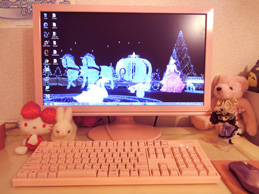
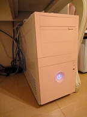

 
ピンクが好きなので、外見は全てピンクにしました
モニターは頑張って塗装しました(*^x^*)
なぜ作ったのか？
- 可愛くて、高性能のPCが欲しかった
- Abobeいじったり、サーバー組んでみたかった
- テレビがないので、テレビ代わりにしたかった
- PCの構造を勉強するために作ってみたかった
- 大学の入学式まで暇だった
スペック
| CPU | Intel i7-920 |
| マザーボード | ASUS P6T |
| メモリ | 6GB (64bitなのに…) |
| OS | Win7 Ultimate 64bit |
| グラボ | HD 5770 |
| HDD | WD 1TB |
| 電源 | 600W PCケースが小さいので小型のもの |
| モニタ | BenQ 21inch |
| ケース | マイクロタワー ピンク |
| キーボード | FILCO 青軸 ピンクカラー |
| コスト | 2010年3月では約12万円(周辺機器込) |
使用用途
テレビ
Win7のVM上でCentOSにてWEBサーバーの構築
Illustrator,Photoshop,Dreamweaverつかったり